| 版 | 処理内容 | 音量 (LUFS) | 真のピーク (dBTP) | 個別再生 | スペクトログラム(縦=周波数・明るい=大きい) |
|---|---|---|---|---|---|
| A1 元+音量合わせ | 元の音声に処理なし。音量だけ他と同じ値に揃えたもの(=比較の基準) | -16.0 | -1.0 | 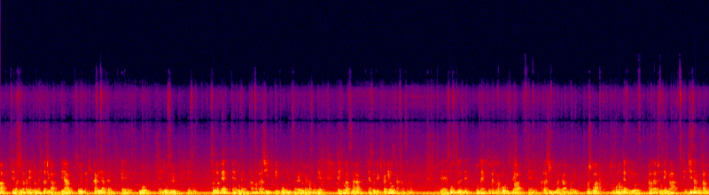 | |
| D1 静的EQのみ | 時間で変化する処理を一切使わない静的EQだけ: 80Hz以下カット/200Hz以下-1.5dB/700Hz+2dB/3.5kHz+3dB/7.5kHz付近+6dB(YouTube版の高域持ち上げの半分程度)/12kHz以上-4dB(ヒス帯)。原理的に「泳ぐ」ことはない | -16.1 | -1.5 | 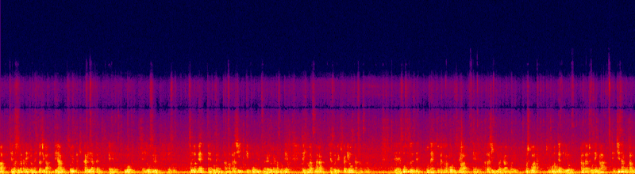 | |
| D2 固定ノイズ低減+静的EQ | 区間内の静かな0.5秒から固定のノイズプロファイルを取り、追従なしで6dBだけ低減(地のノイズをわざと少し残す)。そのうえでD1より高域を強めに持ち上げて(7.5kHz+8.5dB)釣り合わせ、12kHz以上は-4dB。静かな部分のヒスがD1より数dB少ない | -16.0 | -1.5 | 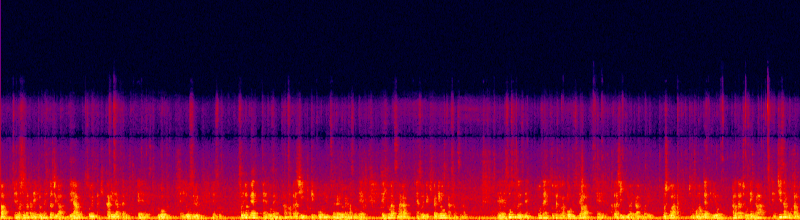 | |
| B 控えめ補正 | (参考・旧案)追従型ノイズ低減(afftdn tn=1)+EQ+ディエッサー。測定では6〜16kHzが元より約9dB落ちていて、本人評価「音が泳ぐ」 | -16.0 | -1.2 | 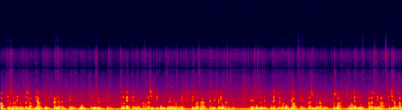 | |
| Y 現行YouTube版 | いまYouTubeに上がっている音声(編集ソフトの自動音量で約+10dB圧縮済み・4〜10kHzを+7〜12dB持ち上げ済み・YouTube再圧縮済み)を同じ音量に揃えたもの。現状との比較用 | -16.0 | -4.4 | 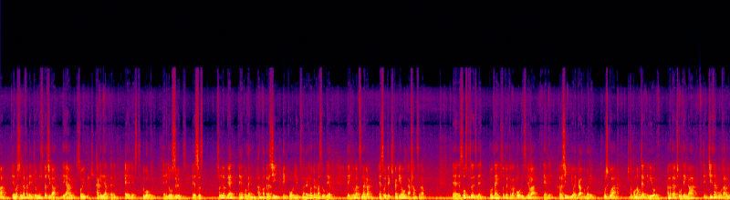 | |
| A0 元のまま | 元の撮影データの音声そのまま(約-27 LUFSで小さい)。比較の基準にはA1を使う | -27.0 | -12.0 | 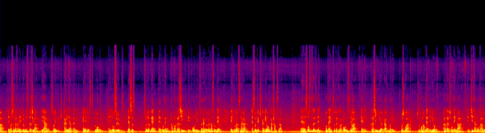 |
| 版 | 処理内容 | 音量 (LUFS) | 真のピーク (dBTP) | 個別再生 | スペクトログラム(縦=周波数・明るい=大きい) |
|---|---|---|---|---|---|
| A1 元+音量合わせ | 元の音声に処理なし。音量だけ他と同じ値に揃えたもの(=比較の基準) | -16.1 | -1.0 | 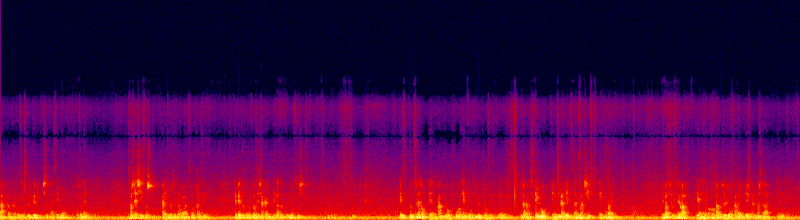 | |
| D1 静的EQのみ | 時間で変化する処理を一切使わない静的EQだけ: 80Hz以下カット/200Hz以下-1.5dB/700Hz+2dB/3.5kHz+3dB/7.5kHz付近+6dB(YouTube版の高域持ち上げの半分程度)/12kHz以上-4dB(ヒス帯)。原理的に「泳ぐ」ことはない | -16.0 | -1.0 | 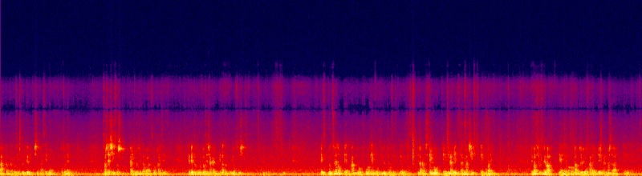 | |
| D2 固定ノイズ低減+静的EQ | 区間内の静かな0.5秒から固定のノイズプロファイルを取り、追従なしで6dBだけ低減(地のノイズをわざと少し残す)。そのうえでD1より高域を強めに持ち上げて(7.5kHz+8.5dB)釣り合わせ、12kHz以上は-4dB。静かな部分のヒスがD1より数dB少ない | -16.0 | -1.0 | 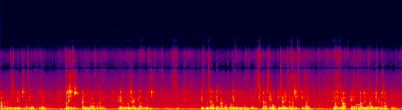 | |
| B 控えめ補正 | (参考・旧案)追従型ノイズ低減(afftdn tn=1)+EQ+ディエッサー。測定では6〜16kHzが元より約9dB落ちていて、本人評価「音が泳ぐ」 | -16.0 | -1.0 | 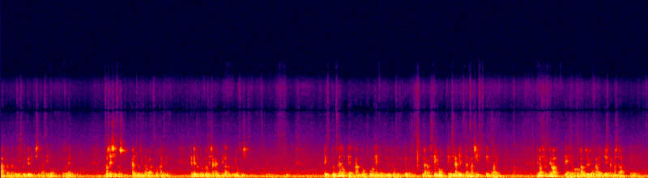 | |
| Y 現行YouTube版 | いまYouTubeに上がっている音声(編集ソフトの自動音量で約+10dB圧縮済み・4〜10kHzを+7〜12dB持ち上げ済み・YouTube再圧縮済み)を同じ音量に揃えたもの。現状との比較用 | -16.0 | -3.1 | 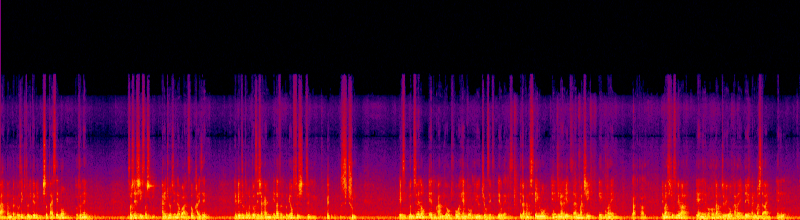 | |
| A0 元のまま | 元の撮影データの音声そのまま(約-27 LUFSで小さい)。比較の基準にはA1を使う | -27.9 | -11.8 | 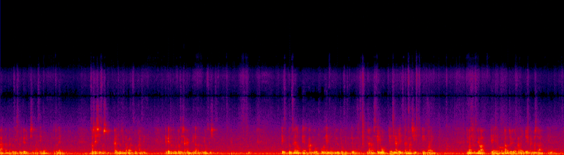 |
元の撮影データは会場後方からの広角で、縦4K(2160×3840)の画面の中で市長は幅270pxしかありません。YouTube版の1080×1920は、元4Kの270×480pxの範囲をちょうど4.00倍に拡大したものです(画像照合で一致度0.987)。つまり元データにも、YouTube版以上の顔の細部は入っていません。足りないのは画素数でなく撮影時の細部なので、後処理で自然に取り戻す方法はありません。
下は同じ瞬間の比較。左=元4Kの該当範囲をLanczosで4倍に拡大、右=いまのYouTube版。元から作り直すと、YouTube再圧縮1世代分のにじみが減る程度の差です。
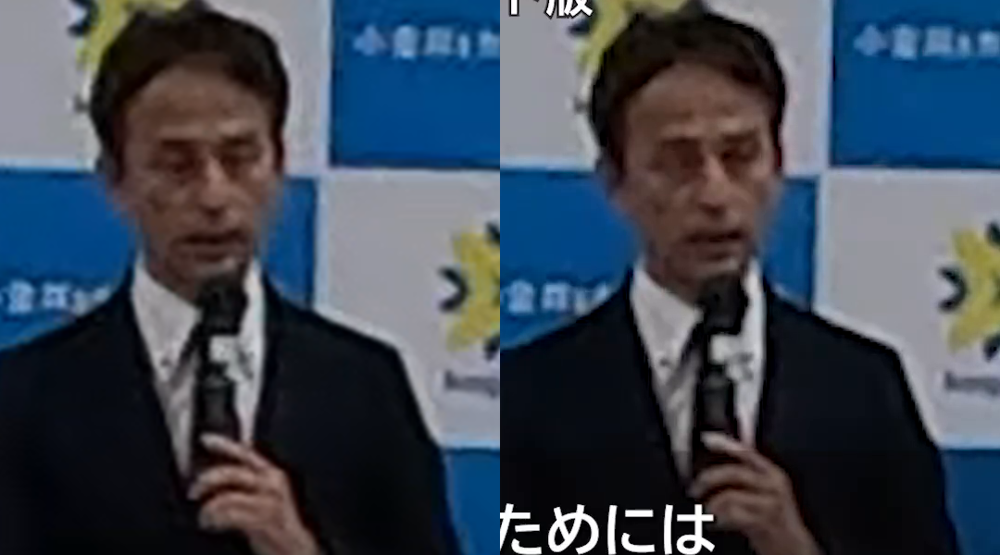
下は顔部分(等倍)に非AIのシャープ処理をかけた比較。左から 元 / CAS 0.6 / アンシャープ 0.8 / ノイズ低減+CAS。輪郭が少し立つ程度で、劇的には変わりません。
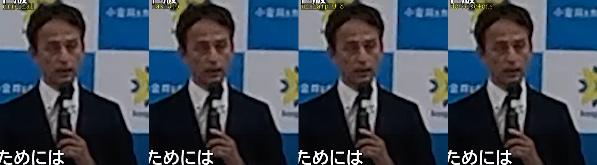
AI超解像(Topaz Video AI・Real-ESRGAN等)は顔の細部を「描き足す」ため、本人と違う顔になる・絵のように見える不自然さが出やすく、選挙期の市長の映像では改変と受け取られる懸念もあるので勧めません。自然な改善策は①元データから再書き出ししてYouTube再圧縮1世代分を減らす、②軽いシャープ+1440p/4Kにして再アップし、YouTubeの高ビットレート枠で圧縮のにじみを減らす、の2つです。